Computer Keyboard Input
The first step in the process of entering an extended string of notes is to either click on the Input box or type:
IN a b c d e
a = staff number Staves are numbered from 1 to 256 up from the bottom.
b = left end position of staff - it can be from 0 to 200.
c = vertical position offset from "normal" in scale steps.
In general, the vertical position of staff 1 should not be altered.
d = staff size factor. This factor controls the size of all items attached to this staff.
e = right end position of staff - from 0 to 200.
If e is left at 0, it assumes 200, as in these examples.
Typing <ALT>I, instead of IN, will put up a staff with the default values.
If no staff "a" is present, a new one is created with the given parameters.
The standard staff length is 7 1/2 inches. For editing purposes, this is divided into 200 points. (However, fractional horizontal positions may be used, e.g. 47.63, etc.)
If you clicked on the Input box, the staff
number will be one above the highest staff currently on the screen and the
default values of the other parameters will be used, i.e. all zeros.
The following dialog box will appear on the screen.
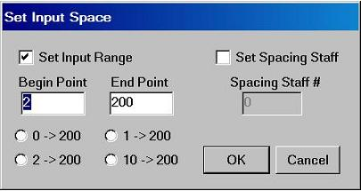
The "Set Spacing Staff" is most often used when adding a second voice to a staff which already has notes. If you click on this box you must then type in the staff number where existing notes will be used as the basis for spacing. The Spacing Staff may be set BEFORE typing the IN command by typing SP n, n = staff number. SP 999 turns of the Spacing Staff. Click here to see example.
In most cases you will click on "Set Input Range." You should type in begin and end point numbers or click on one of the preset ranges.
The input procedure is divided into 5 passes.
Pass 3: Marks (dynamics, accents, etc.)
Following is the 5-pass input procedure.
PASS ONE contains code for notes, rests, measure lines, key signatures,
meter information. The slash separates the items. The colon (or
apostrophe) separates the notes
of a chord. The input must end with a semicolon. (If you are creating an
external file for input, a second line of notes or rhythms may be entered if the first
line ends with a slash.) Notes are entered with their conventional letter names, C,D,E,F,G,A,B. Accidentals
are entered as F = flat, S = sharp, N = natural, FF = double flat,
SS = double sharp. Measure lines are entered as M (see below for
more on this.)
The octave levels are given as 0 through 8. A0 is the lowest A on the piano keyboard,
C1 is the lowest C, C2 is the low C of the cello, C4 is middle C,
C8 is the highest C on the piano. The octave number persists until a new number is given. However if
"P" (for proximity mode), precedes the note letter, then new octave numbers are created internally to maintain the smallest interval between two notes. For example, C4/B/
produces a major 7th skip from middle C up to B. However PC4/B/ produces a minor
2nd, as if you typed C4/B3/. Care should be taken to distinguish between intervals of the 5th and 4th. P persists until an "O" appears. OC, etc. (O = ordinary) turns off proximity mode.
In some cases, much time might be saved by the use of note
input "motives" - see at end of this section.
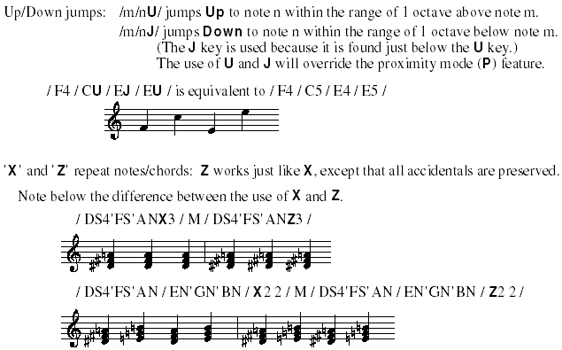
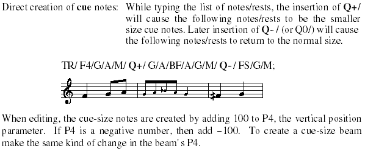
R = rest (the rhythmic value is given in Pass 2.) RX3/ produces
3 rests, etc.
RU = rest up (above the staff.) RD = rest down (below the staff.)
RW = the whole rest symbol regardless of the time value. E.g. a whole measure rest in 3/4 time has the rhythmic value of a dotted half.
RI = invisible rest, sometimes needed when adding a second voice to a line.
M/ creates a measure line (barline). M2/ = measure line covering 2 staves up.
In general, it is best
to enter the bottom staff of a system first. You will not need to enter bar lines on the upper staves. The number need not be repeated
for ensuing bar lines. If there are no meter changes, the bars need not be
entered at this time. See below, after PASS 2. 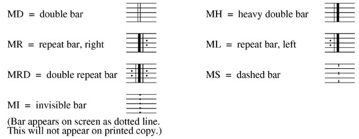
TR/ = treble clef. Other clef codes are AL/ = alto, TE/ = tenor,
BA/ = bass,
PR/ = percussion.
Key signatures are entered by typing KxS or KxF. X = the number of sharps or flats.
For key signatures
made up of naturals, type KxSN or KxFN.
COM/ = common time (C). CUT/ = cut time (alla breve). Any meter number pairs such as 3 4/, 4 4/, 6 8/, 7 16/ etc. may be entered.
For PASS ONE, the following toolbar boxes will appear.
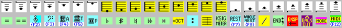
At this point you may type into the input box or click on the various boxes. Clicking on a box will cause various characters to appear in the input box. Explanations of the toolbar boxes will appear below.
To create notes with accidentals, the accidental box must be selected BEFORE the note is chosen.
Clicking on the " / " will repeat the previous note (or chord) or rest.
This box will create a bar line. Clicking on it twice produces a bar up two staves, three clicks goes up three staves, etc. Clicking on the "/" will undo the last bar line command.
For chords, click on the " : ". /C:E:G/ creates a C major chord, etc. (If you are typing the input, the apostrophe ( ' ) may be used instead of the colon.)
Clicking on this creates a double stop, up an octave from the previous note.
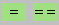
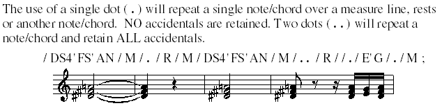
Clicking on this will bring up the following toolbar.
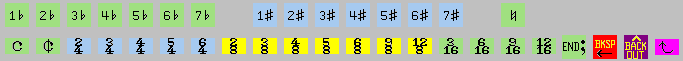
To create a key signature made up of naturals (to cancel a previous key), click first on the "natural" box and then on the appropriate numbered box.
If you click on "MORE" in the first menu, another set of boxes will appear.
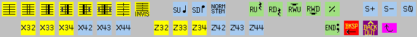
SU/ = note stems up. SD/ = stems down. "NORM STEM" = SO/ = stems ordinary, revert to conventional stem directions.
S+/ = put notes on staff above. S-/ = put notes on staff below. S0/ = notes on main staff (default).
X3 2 repeats
the last 3 items a total of 2 times. X4 4 repeats the last 4 items 4
times. etc.
Z works as X, but all accidentals are retained.
Please note that the
"items" to be repeated include ALL separate entries, such as
M/, SU, S+, etc.
INX -- this is the same as typing IN . . . but an added guide for locating note levels and including accidentals etc. will appear at the left end of the staff.
Notes may also be entered by clicking on the staff itself. However, this is practical only if the staff size is fairly large. If the user finds this method useful, the input sequence should begin by typing INX instead of IN. The guide for note entries will appear at the left side if the staff. These boxes duplicate the most used boxes on the main tool bar.
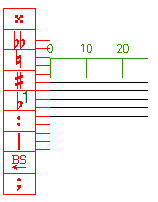
PASS TWO contains code for the rhythmic values of the notes and rests.
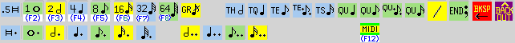
The "T" boxes are for triplets; the "QU" boxes
are for quintuplets.
Rhythm numbers indicate how many equal values are found in a whole note. 4/ = quarter note, 16/ = sixteenth, etc. Thus any rhythmic value is possible. 12/ = eighth note triplets, 20/ = quintuplet sixteenths.
Letters may be used for the most common rhythms.
D/ = .5/ = double whole note, W/ = 1/ = whole note, H/ = 2/ = half note, Q/ = 4/, E/ = 8/, S/ = 16/.
For triplets, TH/ or T2/ = 3/, TQ/ or T4/ = 6/, T/ or TE/ or T8/ =12/, TS/ or T16/ = 24/, T32/ = 48/.
G/ = grace note. (Grace notes will have a value of 65 in P7. When using LJ, this time value is ignored. The slash through the note's tail is created with P8 = 101.)
One or two dots may be added to the above.
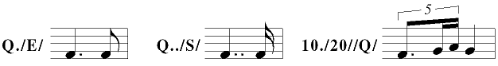
Clicking on the " / " will repeat the previous rhythmic value.
The use of X is the same as above, except that only notes and rests are counted.
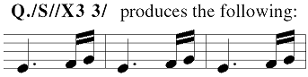
Rhythmic values are stored in P7 in terms of fractions of a quarter note. 4/ is stored as P7 = 1, 8/ is stored as P7 = .5, H/ is stored as P7 = 2, T/ is stored as P7 = .3333, etc.
See Code 1 Help for details.
Rhythm Input with Function Keys
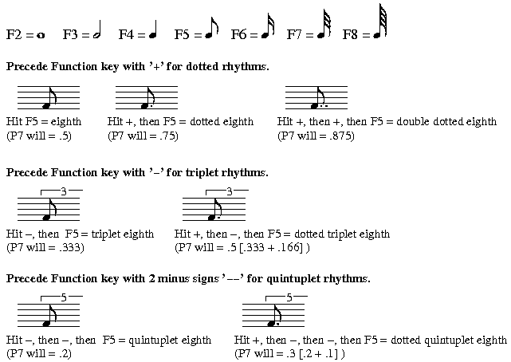
If you had not entered any bar lines in PASS 1, and the PASS 2 rhythm input has been completed, the bar lines may be added automatically. The following dialog box will appear.
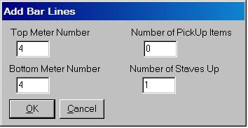
Grace notes are ignored in pick ups. It may be necessary to edit the position of grace notes if they are to appear immediately after a bar. This feature cannot be used if the staff has an added voice with differing rhythms.
If you wish to add bar lines after all the passes of input have been completed, type ADD n1 n2 n3 n4 n5, where n1 = staff number, n2 = top meter number, n3 = bottom meter number, n4 = number of pickup items, n5 = number of staves up to cover. If only n1 is given, the other default values are 4 4 0 1.
In some cases, much time might be saved by the use of rhythm
input "motives" - see at end of this section.
PASS THREE contains code for various "marks," accents, staccato, dynamics, etc.
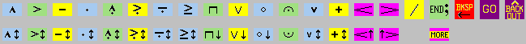
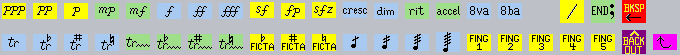
At this point the notes will be numbered from left to right.
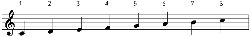
First click on the desired mark and then click on the various notes where that mark is to appear. For example you might click on the accent box (>) and then on notes 1 and 5. Your input will appear in the command box. When you have no more entries to make, click on the END; box and your selections will appear on the notes. You may type all the commands instead of using the mouse. A list of the possible typed commands appears below.
If a mark is to be applied to several continuous notes, type the proper letter followed by the first and last note numbers separated by a colon. S 2:5/ will put staccato dots on notes 2 to 5. Each letter command and its note numbers must conclude with a slash (/).
A quick way to place the same mark on a series of notes, for example staccato on notes 5 through 12, is to first click on the staccato box, then click twice on note 5 and then click on note 12. The second click on note 5 will produce a colon. The text line will appear as S 5:12.
The boxes with the vertical arrows are used to place the mark on the side opposite from the norm. In most cases, typing a minus sign in front the letter will put the mark on the opposite side of the note from the default.
Typing a semicolon or clicking on the END; box will end Pass 3.
In the cases of extended trills, hairpin crescendos and ottavas, two note numbers must be given, one for the start position and one for the end position. TRW 1 2.7/ and C 4.6 7/ and O 5 7/ would produce the following (fractional positions can not be entered with the mouse, they must be typed in):
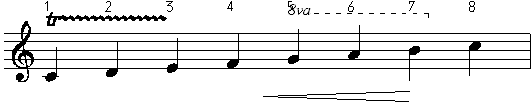
TRW = tr~~~, C = crescendo hairpin, O = 8va.
Also: TRFW = tr~~~ + flat, TRSW = + sharp, TRNW = + natural.
OB = 8ba, C- = decrescendo hairpin.
The following letter commands may be typed in Pass Three:
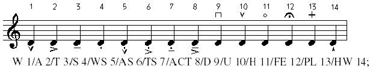
W=wedge A=accent T=tenuto S=staccato WS=wedge/stacc.
AS=accent/stacc. TS=tenuto/stacc. ACT=accent/tenuto
D=down bow U=up bow H=harmonic FE=fermata PL=plus HW=heavy wedge
M=mordant I=inverted mordant
TR=tr TRF=tr + flat TRS=tr + sharp TRN=tr + natural
The above and several of the other marks are stored in a note's P11. Editing P13 and P14 can fine-tune these marks' positions. See Code 1, P11.
The following group will create independent Code 9 items.
AO = arco PZ = pizz. RI = rit. AC = accel. CR = cresc. DI = dim.
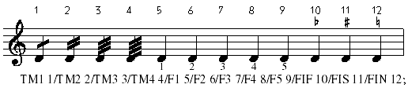
TM = tremolo beams. Or you may type TME (E=eighth), TMS (sixteenth), TMT (thirty-second).
F0 - F6 = fingering numbers. FIF = musica ficta flat, FIS = sharp, FIN = natural.
The tremolos are created as independent Code 6 items.
The "motive" system may also be used in regard to marks
input - see at end of this section.
PASS FOUR allows you to indicate the positions of rhythmic beams.
Beams are input by indicating the first and last note number to be encompassed. You may type the note numbers or click on them with the mouse. Each pair of numbers should end with a slash. (The slash is inserted automatically when using mouse clicks.) A semicolon will end the beam input.
A beam will be placed above or below a group of notes according to what SCORE considers "normal." To specify the vertical position of the beam, a plus (+) or minus (-) may be typed in front of either note number of a pair. If you are using the mouse to indicate notes, you may click on the + or - box on the tool bar.
If all the rhythms in a line are to be beamed in the same way, you may type xB, where x is the number of 8th notes to be connected. If you type 4B or click on the 4B box, SCORE will put a beam over every 4 8th-note group to be found, starting with the first rhythm in the line. See the following example.
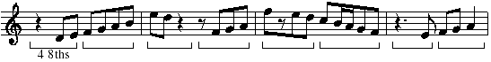
If there are pickup notes, type xBy, where y is the number of pickup notes. The x rhythm groups will begin after y notes. For the following, type 2B2.
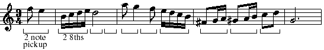
For the above you could first click on the 2/pickup box, then on the 2B box.
For more complicated situations, pairs of note numbers must be typed or indicated with the mouse.
The following beams are set by typing: 1 2/4 7/12 15/16 18/19 21/22 23;
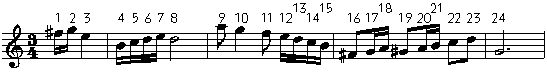
To create a number over a beam, add the number times 100 to one of the note numbers.
For the following, type: 301 3/1104 14/515 19;
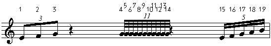
To reverse the conventional beam position (above or below), add a plus or minus to the first of the note numbers - as follows: 1 303/-4 306/7 309/+10 312;
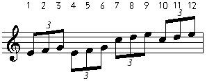
Most of these commands may be entered with mouse clicks on the toolbar boxes.
There is a special feature of the form Xn a b c .... / that can facilitate the entry of beams. n is the number notes to be beamed together and a b c, etc. are the numbers of the first notes of each group to be connected. The list must be terminated by a slash or semicolon. After the slash, the normal syntax of pairs of numbers may be entered. n may be any number between 2 and 9.
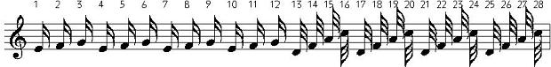
1 2/X3 4 7 10/X4 13 21 25; will produce the following result.
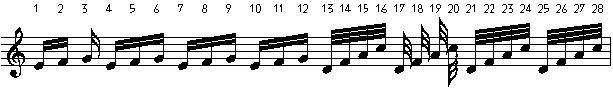
This same feature may be used with Code 5 slur entry.
The "motive" system may also be used in regard to beams input - see at end of this section.
PASS FIVE allows you to indicate the end points of slurs and ties.
The first four boxes to the left are used for slurs/ties coming to the first note in the line, or leaving from the last note. The other commands for slurs/ties are generally the same as those for beams.
The "motive" system may also be used in regard to slurs
input - see at end of this section.
When the input for a line is complete, you are given the following options:
If EDIT is chosen you may step through the input and alter any of the input. This functions the same as the EDI (Edit Input) command found in the main menu.
SAVE saves all the input to a file which can be reentered with the READ command.
(In any case, the input is always saved in INPUT.TMP.)
EXIT concludes the input. The input system spaces rhythms according to their time values.
LJ/EXIT performs the Lineup and Justify command which creates traditional musical spacing.
~~~~~~~~~~~~~~~~~~~~~~~~~~~~~~~~~~~~
The EDI Command
(Edit Input)
If you do not save your input in a text file but later want to do large-scale changes to a line, WinScore provides a way to recreate the input codes for that line.
Type EDI <enter>
You will be prompted for a staff number, left and right positions. Specify the staff number (and positions if you desire.) The EDI command will only function on a single staff. It is important to note that EDI will not work on a
staff which includes counterpoint, i.e.
more than a single voice on the staff.
EDI will create the input code, line by line, for the staff (or portion of the staff) and display it for editing. Step through the input and make any corrections or changes. The EDI command takes note of beam and slur positions (whether they are above or below) and even creates fractional positions for any marks and dynamics. You will probably have to do a lineup and justify
command after using EDI.
~~~~~~~~~~~~~~~~~~~~~~~~~~~~~~~~~~~~
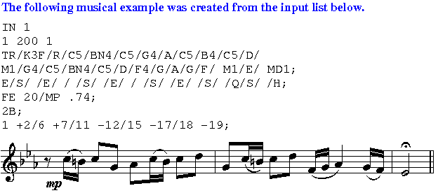
~~~~~~~~~~~~~~~~~~~~~~~~~~~~~~~~~~~~
Example of adding a new line of input on an existing line.
Enter the first voice with all stems down (SD).
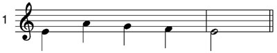
Set the Spacing Staff to staff 1.
Enter the second voice onto the staff above, stems up (SU).
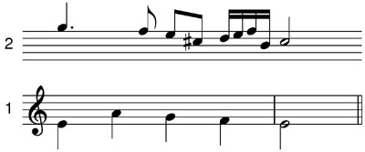
Move the top voice to the staff below.
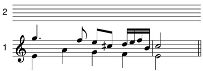
Remove the empty staff. Apply the LJ command to the lower staff.
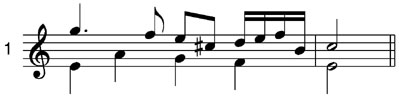
The example refers
to staves 1 and 2, but you can use any two staves.
You can put the upper voice directly on the lower staff, but it may be easier to correct errors, etc. when using two staves.
Invisible
Rests (RI)
and SP n (set spacing to staff n).
First voice entered on staff 1:
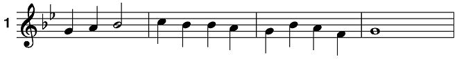
D4/ RI/SU/D5/ RI/C/ B4/C5/D;
Q/ H// // Q//H;
G; (G=go)
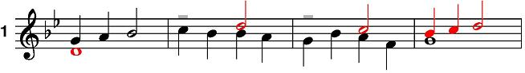
SU = stems up. SD = stems down. SO = stems ordinary (normal.)
Using the input MOTIVE system.
The syntax for setting motives is as follows:
X[..../..../....]/
X may be Any letter of the alphabet. The data between the brackets can be anything that is legal for the current input pass.
The motive is recalled by typing @X. If no number follows X, the motive data is repeated exactly as is. The affect of an added number will vary according to the input pass where it is used. See the examples below.
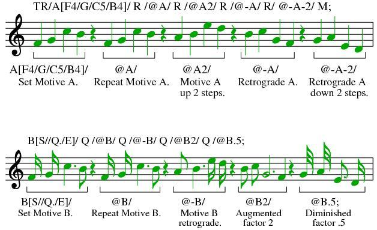
Setting a motive for passes three, four and five is the same as above.
In these cases the motive description will refer to the note numbers found above each note. The original motive can refer to any note numbers. For example if for marks input you stated "Q[S 5:8/A 11]/", this would put staccato dots on notes five through eight and an accent on note 11.
If, when recalling a motive in these passes, a number follows the letter, the motive data will start on that note number, with the other numbers in the original data being shifted accordingly. For example, if the original motive in pass 3 was "Q[S 5:8/A 11]/ ", typing "@Q14/" would put dots on notes 14 through 17 and an accent on note 20.
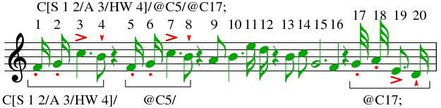
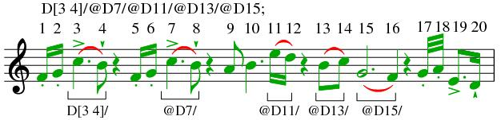
Type MSEE to see the
contents of all your current motives.
Notes motives all have the extension .MOT.
Rhythm motives have the extension .MRH.
Marks motives have the extension .MRK.
Beams motives have the extension .MBM.
Slurs motives have the extension .MSL.
All these are ordinary text files and can be freely edited or created outside of WinScore. They will remain in place unless written over or deleted.